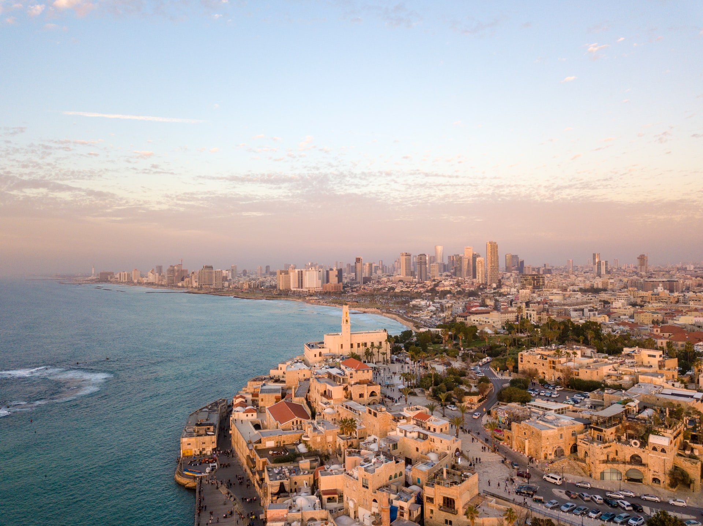

Aliyah Counseling
Sima Gordon
Congratulations. You made it to Israel.
As with every new venture in our lives, there are different stages which pose different challenges. Regardless of which stage of immigration you are currently confronting, you deserve support!
Israel is our land. Israeli is not our culture. Even if your Hebrew is fluent and you did all your homework before making aliya, immigration includes a honeymoon stage and that stage does come to an end. This is normal and healthy. Yet it requires support and resources to enable each family member to thrive in their new surroundings.
How can Foresee help?
Communication – Every culture has its own code of communication. This code is very hard for us foreigners to figure out. Sometimes what we say or more often, what is said to us, cannot be translated in a literal sense. Language is very relative to the context of who is speaking and whom they are speaking to. For this reason, it is a good idea to have a liaison to deal with some of the more sensitive and important tasks that you will need to do until you learn the codes and the best way to communicate within your new environment.
Confidence- Even the most confident person is likely to have a hard time in a new country. Even though we all call Israel our home, there is still an immigration process that has to take place before you will feel fully confident in navigating your way through the corridors of this new home. Someone to support you through navigating this system is a good way to prevent your confidence from taking a hard hit and actually getting what you need when you need it!
Competence – A lot of the skills that you have are going to need some tweaking in order to prove beneficial in your new environment. Your competence has not disintegrated overnight! You are still able to achieve all that you did in chutz la’aretz. However, you have to learn how the new system works in order to let your competence prevail over some systems which may be..well, incompetent!
Connection – You moved here because you feel connected to Eretz Yisrael. Now you have to connect to your community, neighbors, and various systems. This can be daunting especially if you actually still have strong connections back in the alte heim. Keep us the connections that give you support from your old community. Making new friends and learning new systems is a process. Sometimes you need someone who knows you from the olden days. This does not prevent you from establishing new ties. In fact, it helps you to remain confident in your abilities and continue to feel supported in your efforts.
Believe it or not, after you are here for a while, you will actually have “reverse culture shock” when you go back for a visit! You will have become so accustomed to Israeli culture that your native culture will present you with some shock waves. Then when you come back you will know that have come HOME.